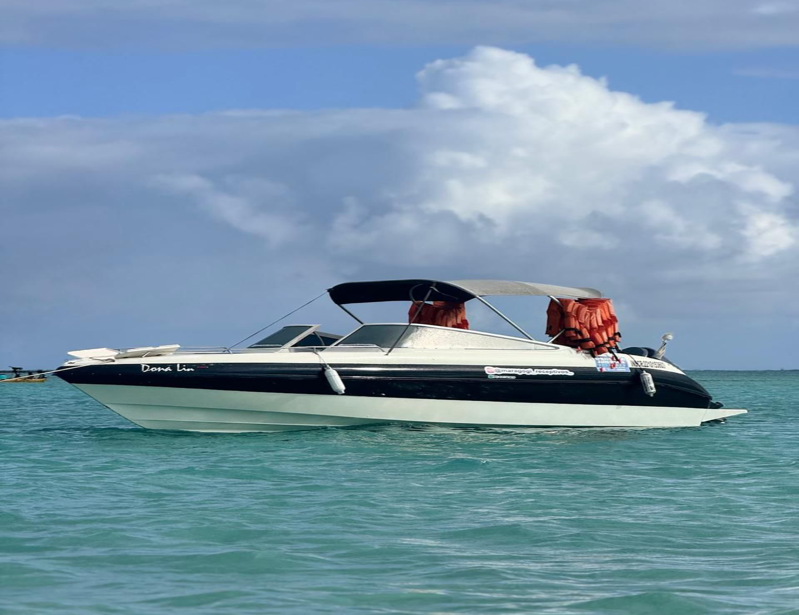
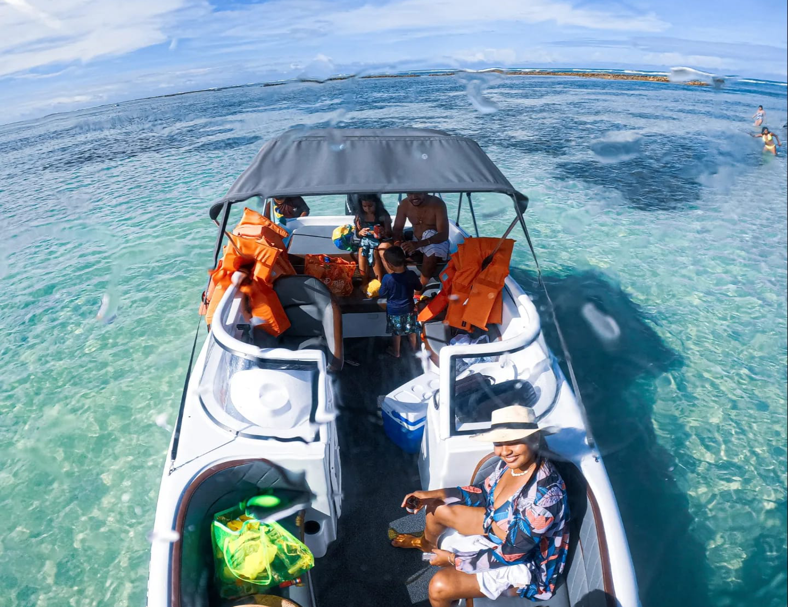
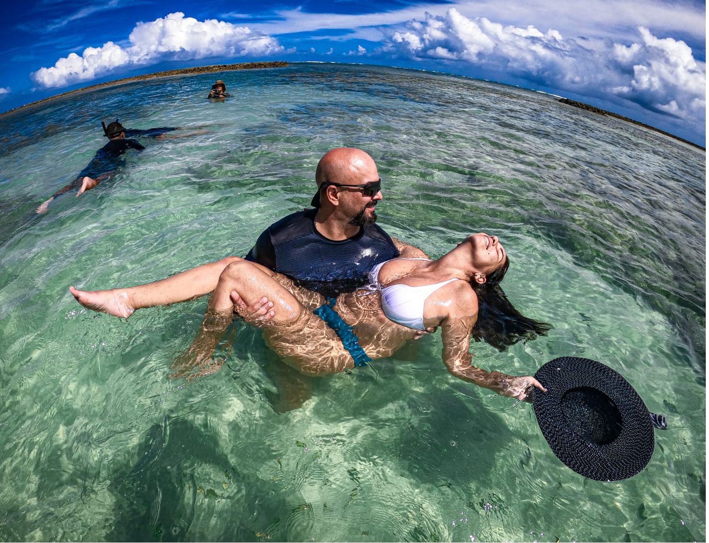
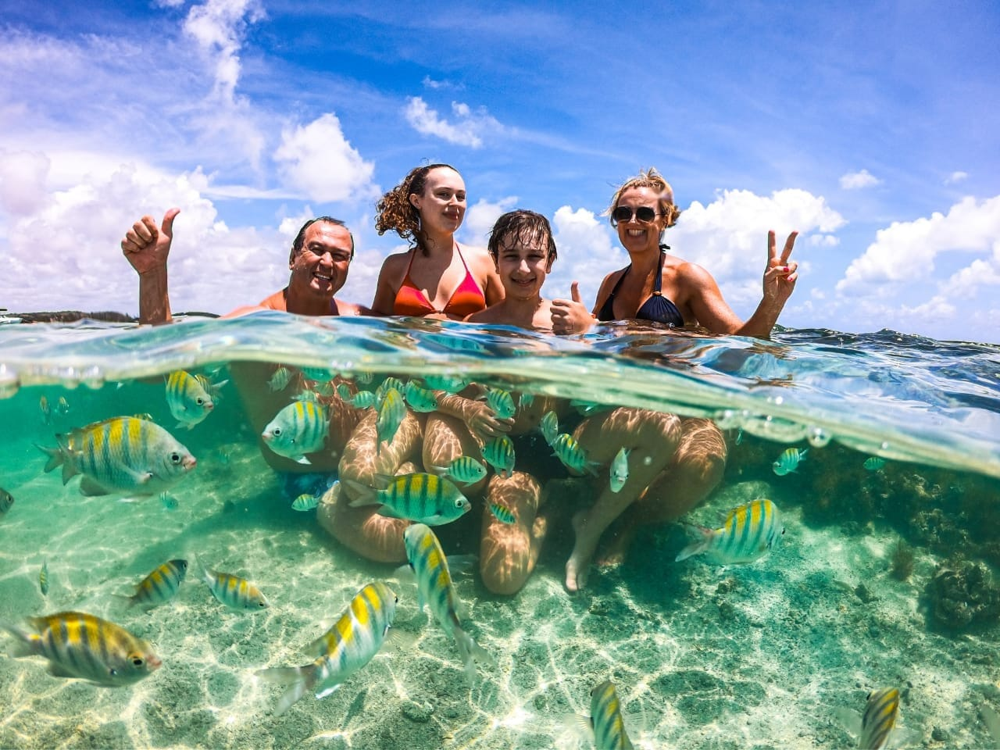
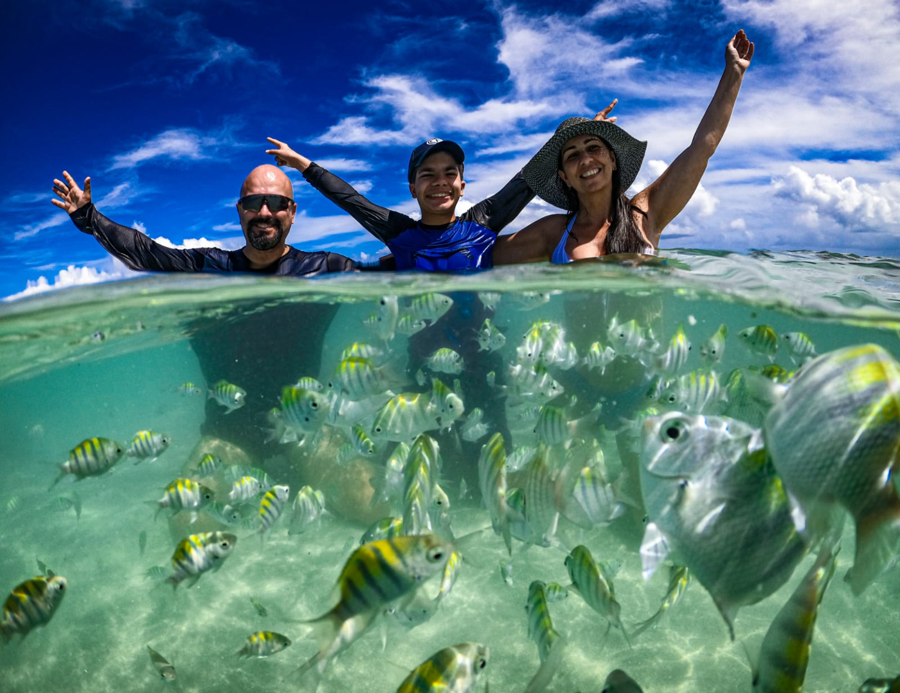
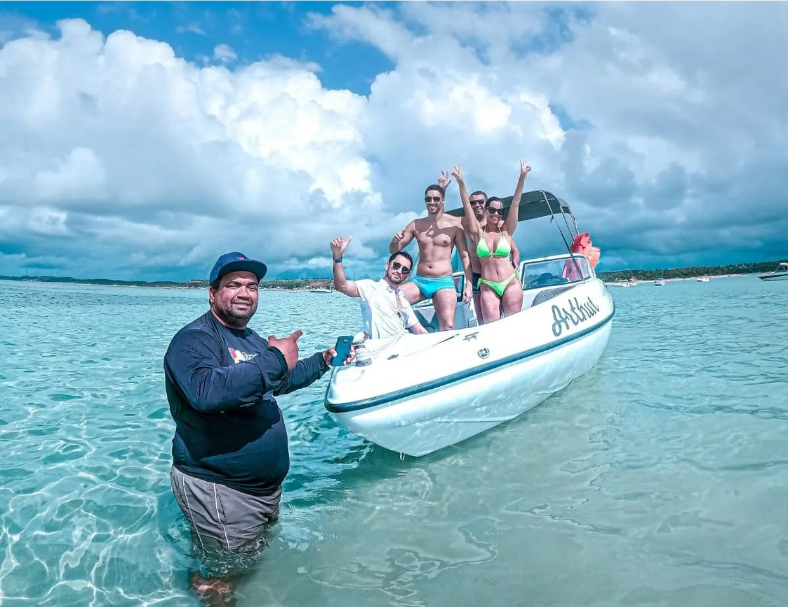

Passeio De Lancha em Maragogi
O passeio de lancha em Maragogi é uma experiência imperdível para quem deseja explorar as belezas naturais da região. Navegue pelas águas cristalinas e conheça praias paradisíacas, onde a vida marinha encanta a todos.
Com guias experientes e lanchas confortáveis, você terá paradas para banho, garantindo momentos de diversão e relaxamento. Sinta a brisa do mar enquanto aprecia as deslumbrantes falésias e a tranquilidade das águas, criando memórias inesquecíveis em um dos destinos mais lindos do Brasil!





